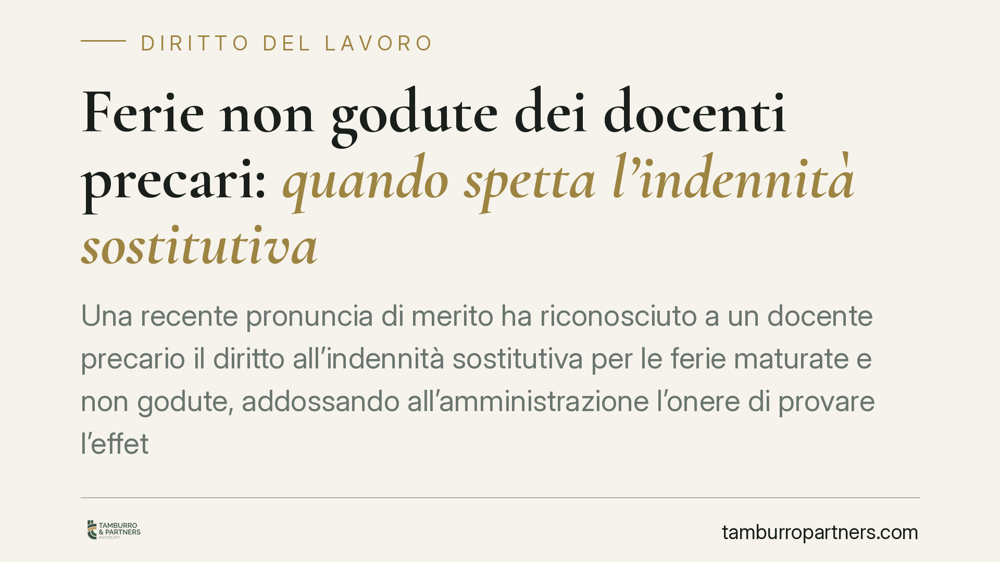

Ferie non godute dei docenti precari: quando spetta l'indennità sostitutiva
Una recente pronuncia di merito ha riconosciuto a un docente precario il diritto all'indennità sostitutiva per le ferie maturate e non godute, addossando all'amministrazione l'onere di provare l'effettiva fruizione dei giorni di riposo. Il tema tocca migliaia di supplenti con contratti a termine. Vediamo cosa dice il diritto interno ed europeo e come muoversi, con la dovuta cautela.

Il caso
Secondo quanto riportato, il Tribunale di Arezzo avrebbe riconosciuto a un docente precario il diritto al pagamento dell'indennità sostitutiva delle ferie maturate e non godute durante l'incarico a tempo determinato, ponendo a carico del Ministero dell'Istruzione la prova dell'effettivo godimento dei giorni di riposo.
Una precisazione doverosa: si tratta di una pronuncia di primo grado, quindi non definitiva. Gli estremi (numero e anno) circolati nelle fonti secondarie andrebbero verificati direttamente sulla sentenza, anche perché la data indicata appare anomala. Non siamo dunque di fronte a un principio consolidato, ma a una decisione di merito che si inserisce in un orientamento già noto in materia.
Inquadramento normativo
Il diritto alle ferie ha copertura costituzionale. L'art. 36, comma 3, della Costituzione stabilisce che il lavoratore ha diritto al riposo settimanale e a ferie annuali retribuite, e che di tale diritto non può disporre in senso rinunciatario. La giurisprudenza ne ricava l'irrinunciabilità come tratto strutturale dell'istituto.
Sul piano europeo rilevano l'art. 7 della Direttiva 2003/88/CE, sull'organizzazione dell'orario di lavoro, che garantisce almeno quattro settimane di ferie annuali retribuite, e la clausola 4 dell'Accordo quadro allegato alla Direttiva 1999/70/CE, che vieta di trattare i lavoratori a termine in modo meno favorevole rispetto ai comparabili a tempo indeterminato per il solo fatto della durata del contratto. Su questa base, il precario non può essere escluso dalle tutele riconosciute al personale di ruolo.
Nel pubblico impiego opera l'art. 5, comma 8, del D.L. 95/2012, convertito in L. 135/2012, che di regola vieta la monetizzazione delle ferie non godute. La norma, però, conosce un'eccezione consolidata in giurisprudenza: quando la mancata fruizione non è imputabile al lavoratore ma dipende dalla conclusione del rapporto (tipico dei contratti a termine, che cessano senza margini per collocare le ferie), il divieto non si applica e residua il diritto all'indennità sostitutiva.
L'onere della prova
Il profilo più significativo riguarda la ripartizione dell'onere probatorio. In coerenza con l'orientamento della Corte di Giustizia UE, non spetta al lavoratore dimostrare di non aver goduto delle ferie: è il datore di lavoro a dover provare di aver messo il dipendente nelle condizioni concrete di fruirne, informandolo in modo adeguato. In difetto, il diritto all'indennità permane. Nella pronuncia in commento tale impostazione risulta applicata al rapporto tra amministrazione scolastica e supplente.
Implicazioni pratiche
Per il docente precario che ha svolto supplenze annuali o brevi senza fruire delle ferie maturate, si apre la possibilità di richiedere l'indennità sostitutiva. Il valore economico dipende dai giorni maturati e non goduti in ciascun contratto.
Un punto chiave è la prescrizione. I crediti retributivi a cadenza periodica sono di norma soggetti al termine quinquennale previsto dall'art. 2948 c.c.; la qualificazione dell'indennità sostitutiva come credito retributivo o risarcitorio incide sul termine applicabile e va valutata caso per caso. Il tempo, comunque, gioca contro chi attende: i periodi più risalenti rischiano di non essere più recuperabili.
Sul versante amministrativo, la decisione conferma che l'onere di documentare l'effettivo godimento delle ferie grava sull'ente. La conservazione ordinata dei registri diventa quindi decisiva.
Cosa fare in concreto
- Recupera i contratti a tempo determinato stipulati (supplenze annuali e brevi) e i relativi periodi di servizio.
- Verifica sui cedolini e sugli atti di servizio quali giorni di ferie risultano effettivamente fruiti e quali no.
- Ricostruisci le ferie maturate per ciascun rapporto, distinguendo i periodi ancora tutelabili da quelli potenzialmente prescritti.
- Considera i termini di prescrizione applicabili prima di attivarsi, tenendo conto dell'incertezza sulla qualificazione del credito.
- In caso di contenzioso è generalmente utile una valutazione tecnica preliminare delle somme e delle probabilità di accoglimento.
Restano da confermare gli estremi esatti della pronuncia: trattandosi di decisione non definitiva, il quadro potrà evolvere nei successivi gradi di giudizio.
Disclaimer
Contributo informativo a cura di Tamburro & Partners Avvocati – Avv. Giuseppe Tamburro. Non costituisce parere legale.
Ogni storia di lavoro ha i suoi tempi.
Se gestisci HR e vuoi un confronto su contenzioso, ispezioni o licenziamenti, scrivi allo studio. Ti rispondiamo entro un giorno lavorativo.